Basicamente tigres es el equipo el cual sigo desde pequeño por lo que
siempre
lo he seguido y he podido estar al pendiente de ellos.

Basicamente tigres es el equipo el cual sigo desde pequeño por lo que
siempre
lo he seguido y he podido estar al pendiente de ellos.
Este fue el equipo que me enamoro, solo verlo jugar era ver, calidad
lo que ayudo tambien
fue mi amor por cristiano, ya que en ese momento era el mejor del mundo.
El arsenal es el equipo el cual, veo videos y jugaban muy bien, y acutal
siguen
jugando bien, aunque son muy pechofrios

Gran anime, gran historia, gran entrega, de esos animes donde no te aburres
siempre
hay mucha accion y formas de verlos.
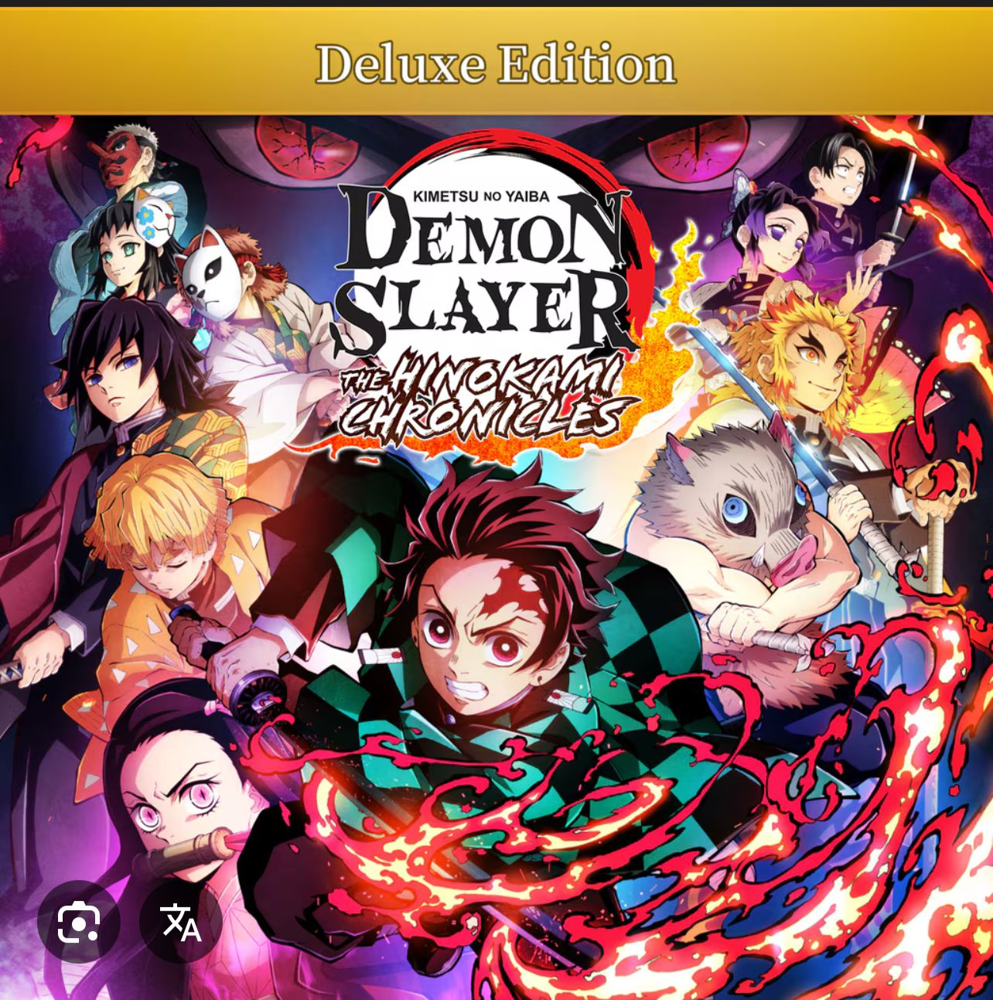
Mi primer anime de remonace el cual me sirvio para conocer el genero
para mi
fue mi anime mas querido y el cual sigue siendo mi favorito.
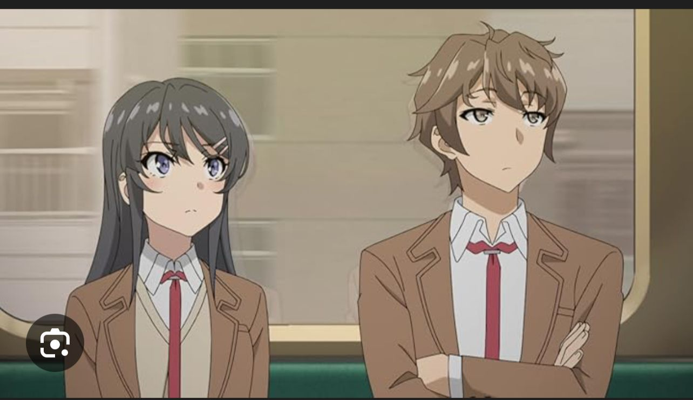
Este anime es nuevo para mi, ya que llevo poco viendolo, pero me ha estado gustando
siguen
aun muchos capitulos, pero se esta volviendo de mis favoritos

Basicamente mi saga favorita y heroe favorito de toda la vida
toda sus sagas son buenas
por lo que siempre recomiendo cual sea, pero con que veas una, siempre te gustara
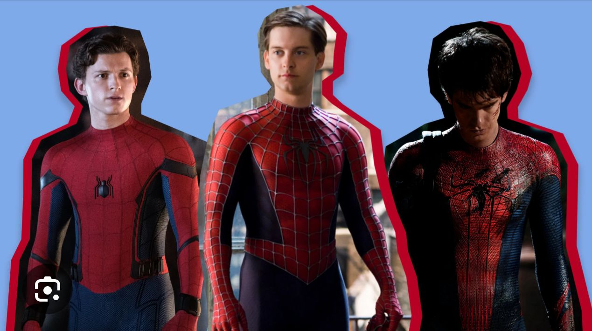
El mas inteligente de todos, y las mejores sagas que puede tener el cine
recomiendo ver
la saga de el caballero de la noche, ya que ahi se demuestra el verdadero batman
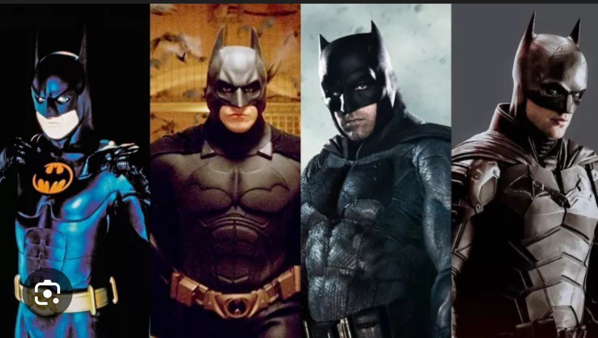
Serie muy oscura la cual, tiene mucho drama y accion
por eso es de mis favoritas dentro
del mundo de dc, ya que siempre hay buenas cosas
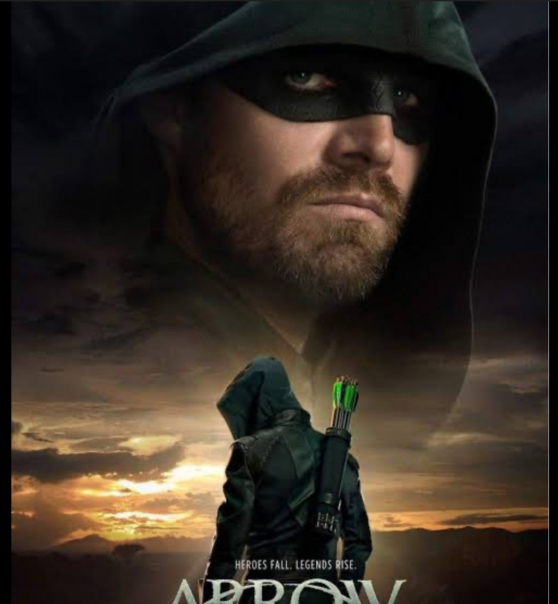
Este es el gimnasio en el que me encuentro actualemnte, y es muy bueno y cumplidor
lo unico malo seria el incremento de precios.
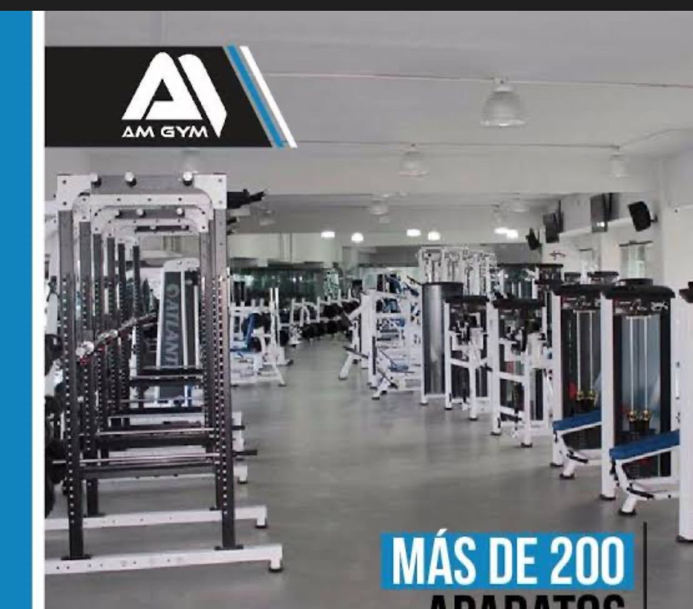
Solo he ido una vez y esta super bueno, el mas grande de sanicolas
por lo que siempre
esta muy lleno pero si no fuera por eso, seria de los mejores de monterrey.
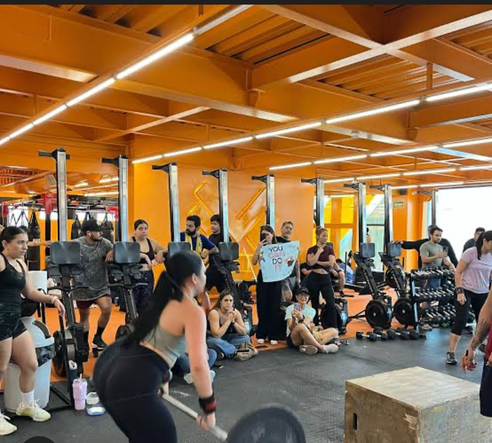
Este gym es uno el cual nunca he ido pero tengo en mi lista de deseos
ya que, es una
marca americana la cual, tiene aparatos muy nuevos o novedodos para mexico
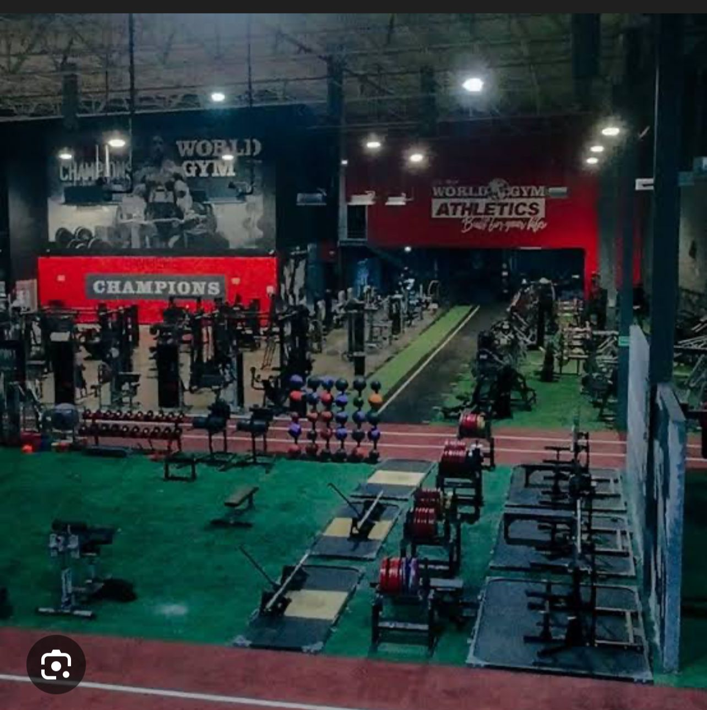
Es un grupo el cual, podemos hacer amigos, conocer mas a dios, crecer
como persona,
ver la vida de otra forma, madurar, y lo mas importante, ser un lider, el cual guie a los demas.
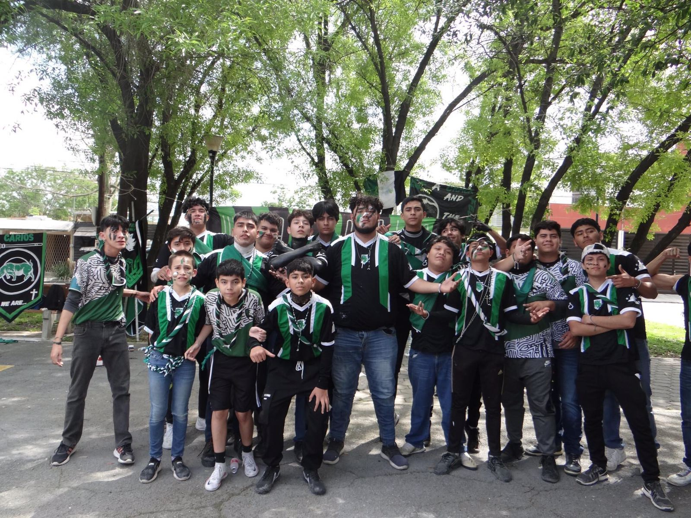
1-Flex-direction
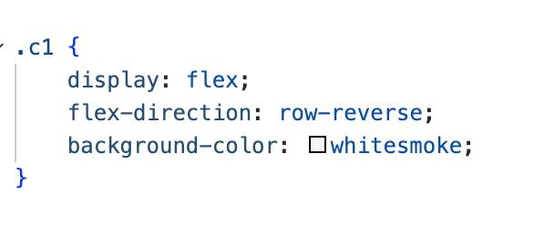
2-Flex-wrap
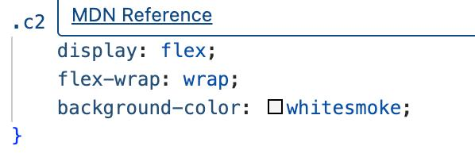
3-Flex-flow
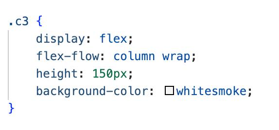
4-Justify-content
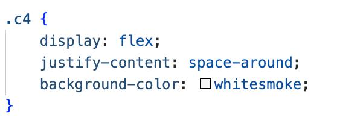
5-align-items
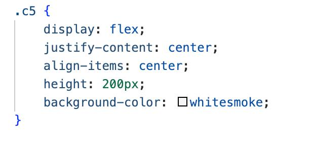